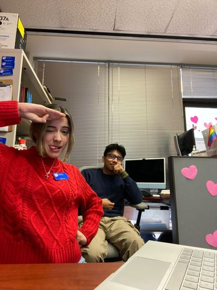
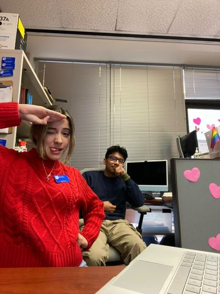
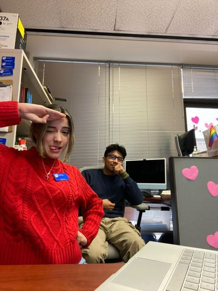

Andrea Acosta
Second Year Pre-Business Major studetn at The University of California, Riverside.my most important career goal is definitely to graduate from the University of California, Riverside with a major in Business Administration, a concentration in Marketing, and a minor in Media and Cultural Studies. I hope to be allowed to get a job right after graduation and be able to help my parents financially. However, what I know is that in the future, I want to create a Venezuelan business in San Diego, California. A place where everyone is invited to taste and experience Venezuelan culture, the country where I was born and raised. I have the dream of creating a place where everyone will feel welcome and joyful, and your immigrant status is a tool for feeling pride, not feeling shame.
I lived in Venezuela, a beautiful country, but where a dictatorial regime grew over time and slowly began consuming my family’s life. Besides, all the stutreggles and persecutions my family and I were feeling daiy because of the Venezuelan situation, I was deeply happy. I had my future planned in that little and problematic country. I was supposed to assit to one of the biggest universities in Venezuela, Universidad de Los Andes, where I would study Business. However, my family and I were forced to find a way out and look for a place to take refuge, when my parents began to be persecuted and threatened with death because they thought differently and shouted, “freedom,” to this dictatorial regime in which my country finds itself. Therefore, seeking for a better place to live, the United State was our first and unique option. Nowaday, I have completed one of my dreams. I won a scholarship to study at a great university in California and I am going into my second year at the university. I plan to complete my next dream: earning a bachelor’s degree and helping my parents so I can provide them a great future along with myself.
Member of the Highlander Economics Club at UC Riverside. I am also a DSIG Intern where I colaborate with community services at the events and conferences held at the University of California, Riverside and off Campus event. I am part of the The Unducmented Student Program where I work at the from desk at the office located on campus.I would like to increase my professional knowledge and skills to obtain future benefits in this country and support my family and my inquiries. Therefore, I believe that that is something that I can receive from this Butterfly project program. Since my major is Business, I believe that this program will work as a tool for providing me with professional and beneficial opportunities, such as internships, and fellowships, in which I will be able to gain valuable experiences, acquaintances, and skills that will be contributed to my career progression and professional knowledge. Additionally, there are a few things that I seek to gain from this program, which are increasing my professional skills, expanding my view academically and professionally in terms of planning my career future, pulling out of my comfort zone, getting more involved in the on-campus event, and increasing my networking skills. I believe that I will be able to receive all these things mentioned by attending this program.
Experience
EOAP Presenter
• Facilitated 40-minute online presentations to inform 50 high school students about student programs.
• Partnered with colleagues to distribute and share resources and information regarding upcoming events.
• Used a green screen in a high school presentation to provide information about USP
front Desk
• Recruited interested parties and increased involvement by % in the USP program.
• Responded to inquiries via email, telephone, and in person regarding department information.
Event Organizer
• Developed ideas and implemented events and performances for the institution.
• Scheduled a time for competitions with 100 participants.
• Providing with Maintained on the lobbi, office, audience stands, and carpets areas of the institution
Education
UC Riverside
University City High School
Portfolio
 



